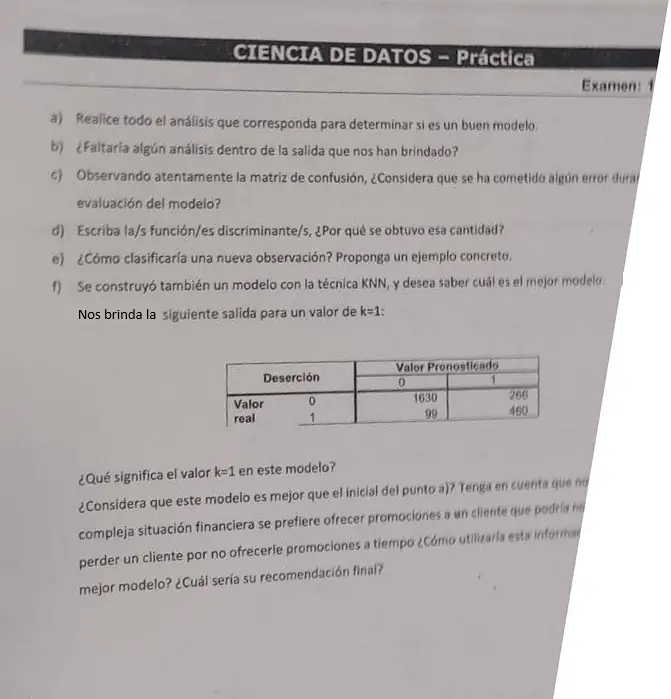

Parcial, práctica, 13/06/2025 (hoja 3)
Parcial, 13/06/2025
Enunciado


Preguntas con opciones
Salen de este examen, adaptadas. Dejalas para el final, porque las opciones pueden dar pistas.
- 1
Si la variable predicha toma c valores, ¿de qué tamaño es la matriz de confusión?
Se tomó: Parcial 13/06/2025, adaptada
Es de c × c. Depende de las clases, no de las predictoras.
Propuesta de respuesta
Respuesta no verificada. La propuso Luta Studios con inteligencia artificial y ningún docente la revisó. Puede tener errores.
Esta hoja trae las seis consignas. Los puntos a) a e) se resuelven con las tablas de las hojas 1 y 2, y el desarrollo está en esas dos propuestas. Acá va un resumen de cada uno y el punto f) completo.
a) Hay modelo, porque la Lambda de Wilks rechaza la igualdad de medias (Sig. ,000). Pero no se cumplen normalidad ni covarianzas iguales, está cerca de 1, el importe mensual casi no aporta (,070) y el acierto de 73,5 % queda debajo del 77,2 % de decir siempre «no se va». No es un buen modelo.
b) Faltan los diagnósticos de colinealidad, los autovalores con la correlación canónica, los coeficientes tipificados y la clasificación con datos de prueba.
c) Sí. La matriz se midió sobre los «casos agrupados originales», los mismos con los que se entrenó. Faltó medir con datos de prueba.
d) Una sola función, porque .
e) Se reemplaza en y se mira a qué centroide queda más cerca ( o ), o se reemplaza en las dos funciones de Fisher y gana la mayor. El ejemplo de la hoja 2 da y queda en el grupo que deserta.
f) ¿Qué significa k = 1? Es la versión más simple del KNN. Cada cliente nuevo recibe la clase del cliente más parecido de la base, su vecino más próximo.
f) ¿Es mejor que el discriminante?
| Discriminante | KNN, | |
|---|---|---|
| Acierto global | ||
| Acierto en los que no desertan | 75,0 % | |
| Acierto en los que desertan () | 68,5 % | |
| Desertores no detectados | 176 | 99 |
| Promociones a quien no se iba () | 474, el 25,0 % | 266, el 14,0 % |
KNN acierta más en las dos clases y es parejo, como piden los apuntes. En el espacio ROC queda arriba y a la izquierda del discriminante (0,140 y 0,823 contra 0,250 y 0,685).
f) El contexto de costos. La hoja dice que se prefiere ofrecer promociones a un cliente que quizás no se iba antes que perder un cliente por no ofrecérsela a tiempo. Entonces cuesta más un desertor no detectado (real 1, pronosticado 0) que una promoción de más (real 0, pronosticado 1). Con una matriz de costos con ceros en la diagonal, un costo para el primer error y para el segundo, con :
KNN tiene menos errores de los dos tipos (99 contra 176 y 266 contra 474), así que cuesta menos con cualquier par de costos positivos. Con y , por ejemplo, el discriminante cuesta y KNN .
f) Recomendación. Me quedaría con KNN, con dos controles antes de usarlo.
- Medir los dos modelos sobre los mismos datos de prueba. La matriz del discriminante es sobre los datos de entrenamiento, y la del KNN no dice sobre qué datos se armó. Con y los datos de entrenamiento, cada cliente sería su propio vecino y el acierto daría cerca del 100 %. El 85,1 % sugiere que se midió con otros datos, pero hay que confirmarlo.
- Elegir experimentalmente, probando por ejemplo de 1 a 10 y quedándose con el de menor error en prueba, mirando también la matriz de confusión. Antes, estandarizar las variables, porque la deuda en pesos pesaría mucho más que la edad en años.
En contra del KNN, es un método retardado. Para cada cliente nuevo hay que comparar contra toda la base, y no da una función para explicar qué hace que alguien se vaya. Si al negocio le importa explicar la deserción, el discriminante (o un árbol) sigue sirviendo para eso.
Respuesta no verificada. Puede tener errores.
Se armó con Parcial, secciones Vecinos más próximos (KNN), Evaluar un modelo (costos, ROC y Comparar dos modelos) y Análisis discriminante. Los puntos a) a e) se apoyan en las propuestas de las hojas 1 y 2.
Quedó en duda: La foto corta el margen derecho del punto f). Leí que se prefiere ofrecer una promoción de más antes que perder un cliente. Los costos 5 y 1 son de ejemplo, la hoja no da números. La salida del KNN no dice sobre qué datos se midió.
¿Cómo te fue?
Marcá cada tema del examen. Las preguntas con opciones ya se corrigieron solas.
- Análisis discriminanteAnálisis discriminante, en Parcial
- KNNVecinos más próximos (KNN), en Parcial
- Comparar modelosComparar dos modelos, en Parcial
- CostosCostos, en Parcial